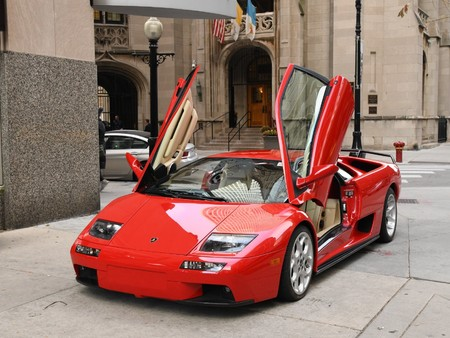
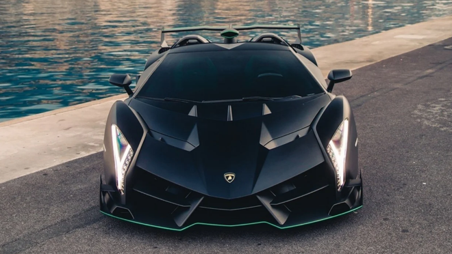

El Lamborghini Urus es un SUV diseñado por Lamborghini. El coche fue presentado el 4 de diciembre de 2017 y se lanzó al mercado para el año modelo 2018. El nombre proviene del Urus, el antepasado del ganado doméstico moderno, también conocido como el Bos primigenius. El Lamborghini Urus no usará los motores V10 o V12 de aspiración natural de Lamborghini. En cambio, El grupo Volkswagen ha desarrollado un nuevo V8 twin-turbo de 4.0 L. Lamborghini afirma que este motor solo se usará en la Lamborghini Urus y en algunos modelos de Audi RS y en la línea A8, y que se comparte con Bentley en el coupé Continental V8 y Flying Spur V8. El Lamborghini Urus será mucho más liviano que la mayoría de los SUV debido al uso extensivo de polímero reforzado con fibra de carbono, aunque se basa en la misma plataforma que el Audi Q7, Bentley Bentayga, Porsche Cayenne y Volkswagen Touareg. El Urus contará con un motor V8 biturbo de 650 caballos de fuerza, y habrá una versión híbrida enchufable. El Urus tendrá un diseño de motor delantero y tracción total. El Urus tendrá una velocidad máxima de 190 mph (305 km/h), lo que lo convertiría en el SUV de producción más rápido del mundo, superando los 187 mph (301 km/h) del Bentley Bentayga. Su capacidad será para cuatro personas.En septiembre de 2013, el CEO de Lamborghini, Stephan Winkelmann, confirmó que el Urus entrará en producción, convirtiéndose en el primer SUV de la marca desde el LM002.La producción comenzará en febrero de 2018 y Lamborghini planea construir 1000 unidades en el primer año de producción, y 3500 en 2019.
Veneno
El Lamborghini Veneno es un automóvil superdeportivo de 2 puertas de tijera biplaza, con motor central-trasero montado longitudinalmente de tracción en las cuatro ruedas, producido por fabricante italiano Lamborghini.El Lamborghini Veneno es un automóvil superdeportivo de 2 puertas de tijera biplaza, con motor central-trasero montado longitudinalmente de tracción en las cuatro ruedas, producido por fabricante italiano Lamborghini. Cuenta con un motor V12 de 6498 cm³ (6,5 L; 396,5 plg³) de naturalmente aspirado con inyección electrónica "Lamborghini Iniezione Elettronica" (LIE), el cual envía la potencia de forma permanente a las cuatro ruedas, es decir, tracción integral como norma en la casa a través de la transmisión manual electrohidráulica ISR de siete velocidades. La única diferencia con el Aventador es que en la carrocería existe una aerodinámica específica que lo hace más efectivo, además de ser 125 kg (276 lb) más ligero. De hecho, el alerón trasero móvil tiene una regulación de tres posiciones que lo hacen ideal para pilotarlo en un circuito, aunque también esté homologado para circular por vías urbanas. Desarrolla una potencia máxima de 750 CV (740 HP; 552 kW) a las 8400 rpm y un par máximo de 690 N·m (509 lb·pie) a las 5500 rpm, que llevan al super deportivo a acelerar de 0 a 100 km/h (62 mph) en 2,8 segundos y alcanzar una velocidad máxima de más de 355 km/h (221 mph). Cada detalle del diseño del Veneno es funcional para obtener la carga aerodinámica óptima con el menor arrastre, consiguiendo además una apropiada refrigeración del motor. El modelo, como todo Lamborghini, mantiene un diseño coherente al de los demás modelos del catálogo, incluyendo formas geométricas extremas, así como el extremo delantero en forma de flecha, líneas afiladas, superficies angulosas y faros LED en forma de "Y".